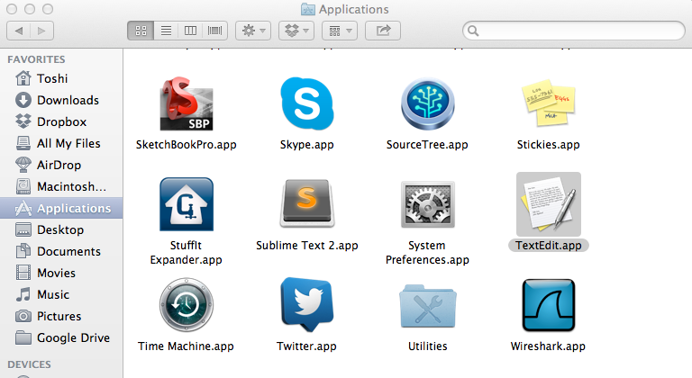
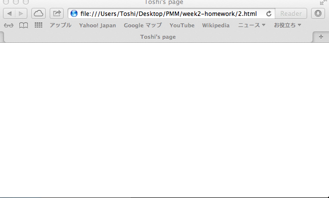
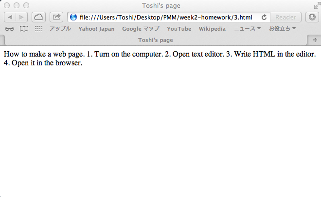
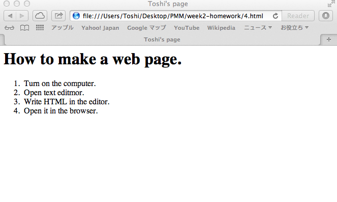

How to make a web page
Created by
Toshi
Start up your computer
Open text editor

Result
Result

Result

Result

Put it on the web server!
Just like this web page. :)
http://toshimaru.net/slides/how-to-make-web-page/
Want to write HTML?
Visit
http://tinkerbin.com/